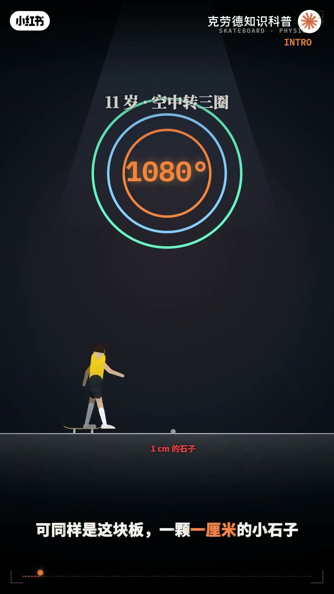
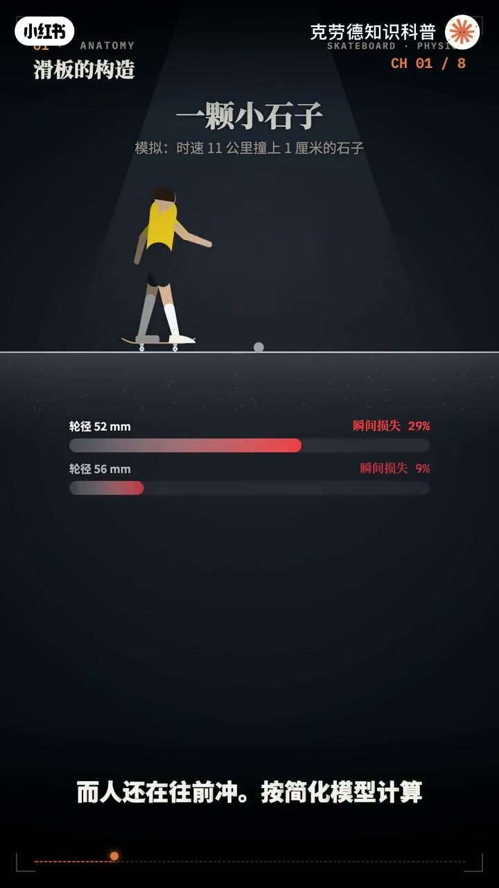
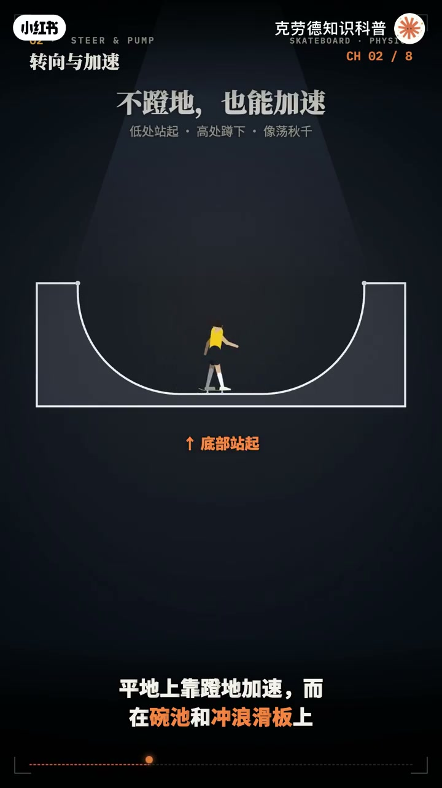
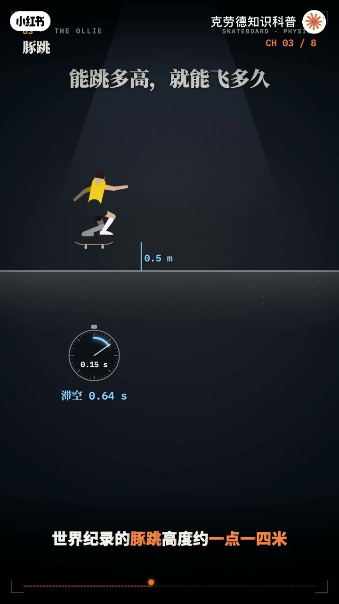
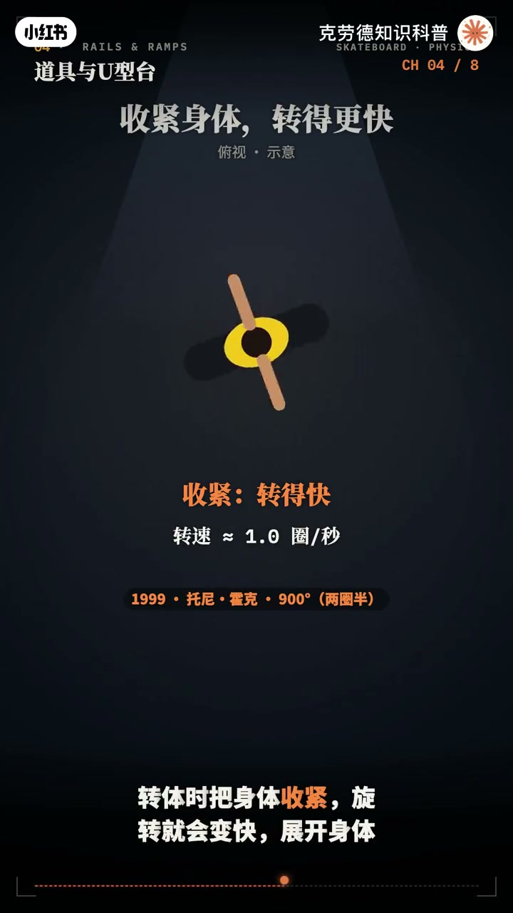
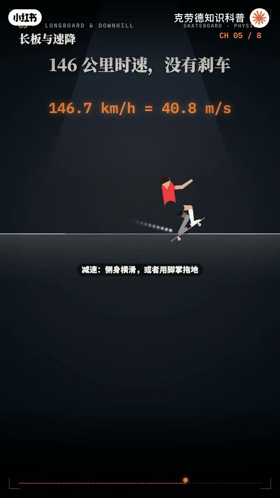
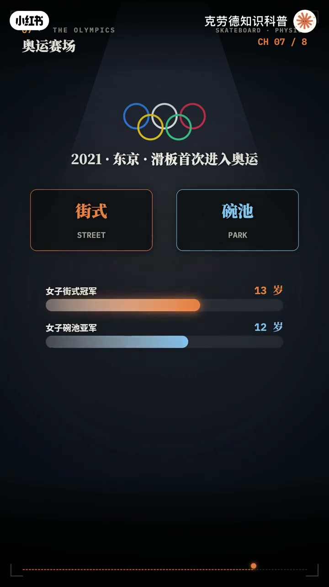
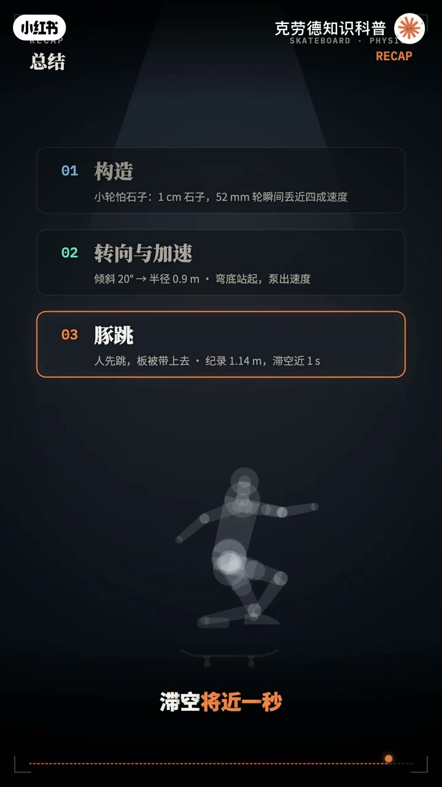

内容要点
「🛹滑板进阶教学，硬核动画拆解滑板」教程要点：一塊滑板 整板只有3公斤左右 → 四個輪子的直徑只有5厘米多 → 可站在上面的人不用手 → 就能帶著它一起跳上一米多高；详见正文。
知识结构
一塊滑板 整板只有3公斤左右
幾乎所有滑板動作
在10%的坡上
- 一塊滑板 整板只有3公斤左右
- 四個輪子的直徑只有5厘米多
- 可站在上面的人不用手
- 就能帶著它一起跳上一米多高
- 半程長板從山坡上衝下
一塊滑板 整板只有3公斤左右
00:00–01:53一塊滑板 整板只有3公斤左右
一塊滑板 整板只有3公斤左右；四個輪子的直徑只有5厘米多；可站在上面的人不用手；就能帶著它一起跳上一米多高；半程長板從山坡上衝下；人類的最高紀錄是時速146公里；而滑板上沒有剎車；2020年；一個11歲的少年；在U型台上騰空轉了整整三圈；可同樣是這塊板；一顆1厘米的小石子；就可能讓你摔個跟頭；轉向 加速 騰空 旋轉；藏著一整套關於平衡和能量的學問；這70平 彼此把滑板搶套；先認識一塊滑板；板面通常由七層封木壓制而成；長約80厘米 寬約20厘米；兩頭翹起的板尾和板頭；是做動作的關鍵；輪子決定了腳感；街市滑板的輪子直徑50-56毫米；又小又硬；長板的輪子大到65-75毫米；更軟；硬度用A值表示；數字越大越硬；硬輪適合滑動和做動作；軟輪抓得好；過粗糙路面更穩；為什麼一顆小石子就能讓人摔倒；輪子撞上石子的一瞬間；滑板幾乎被卡住；輪子撞上石子的一瞬間；滑板幾乎被卡住；而人還在往前衝；按簡化模型計算；一厘米的石子能讓52毫米的小輪；瞬間損失近四成速度；90毫米的大輪值損失兩成多；還有個常見誤區；軸承上的ABC等級；代表的是加工精度；不是速度；真正影響順滑的；是軸承幹不乾淨；潤滑好不好；滑板沒有方向盤；靠傾斜轉向；支架裡的轉向軸是斜著裝的；板面一傾斜；前後兩個橋就會朝相反方向偏轉；軌跡就彎了起來；按適義模型；傾斜10度；轉彎半徑約1.7米；傾斜20度；縮小到0.9米；轉彎時；人還要像彎內傾斜；和騎自行車一樣；以每秒4米的速度；轉一個半徑3米的彎；身體要傾斜將近30度；停地上靠蹬地加速；而在腕池和衝浪滑板上；高手可以完全不蹬地；在彎道最低處站起來；在高處蹲下去；就像盪鞦韆一樣；每一下都給自己充一點能量；按理想模型計算；在半徑2.5米


01:57–03:28幾乎所有滑板動作
幾乎所有滑板動作；都從臀跳開始；它分成幾步；下蹲；後腳猛踩板尾；前腳向上向前搓；再把板拉平；最後一起落地；板尾砸地的一瞬間；地面把板尾向上彈；板子繞著後輪翹起來；前腳沿著粗糙的砂紙往上搓；靠摩擦把板子拖到空中；關鍵在於；人先跳；板子是被腳帶上去的；臀跳半米高；人和板在空中；大約停留0.64秒；世界紀錄的臀跳高度；約1.14米；滯空將近一秒；在這個基礎上；前腳往板邊一踢；板子就會繞著長軸翻轉；這就是肩翻；板子在零點幾秒內；轉完一整圈；再被雙腳穩穩接住；在扶手和台階上滑行；靠著十支架或板面；和金屬之間的摩擦；打了辣；摩擦係數減半；同樣的速度；能多滑一倍的距離；所以；滑手們總愛給道具抹辣；在U型台上；速度和高度；可以相互轉換；想衝出抬口一米高；到抬口時的速度；至少要每秒4.5米；到抬口時的速度；至少要每秒4.4米；衝出兩米；就要每秒6米多；空中停留1.3秒左右；有了一秒多的滯空；就能在空中轉體；1999年；波尼霍克；完成了兩圈半的900步；轉體時把身體收緊；旋轉就會變快；展開身體；旋轉就慢下來；這和花樣滑冰；是同一個道路；2020年；11歲的巴西少年；在U型台上；完成了1080度；整整三圈；刷新了這項運動的想像力；長板更長；更穩；輪子更大更軟；玩法也更多；街頭代步 刻滑；在板上走步跳舞的舞板；以及最刺激的速降；速降比的是空氣動力學


03:27–05:24在10%的坡上
在10%的坡上；站直滑最高；只能到時速50公里左右；蹲低乘1個球型；迎風面積減半；最高速度就能超過70公里；速降紀錄是時速146公里；相當於每秒40米；滑板沒有剎車；減速只能靠側身騰滑；用輪子和路面摩擦；或者用腳掌托頂；速度太快時；板子可能會左右擺動；越擺越厲害；這叫速度；把支架調緊；重心放在前腳；就能把它壓下去；小魚板和巡航板更短；更輕 輪子軟；適合城市代步；背著就能上地鐵；衝浪滑板的前支架；可以大幅擺動；連在平地上扭動身體；就能像衝浪一樣頓出速度；是衝浪者在陸地上的練習工具；電動滑板靠輪補電機驅動；時速可以達到三四十公里；下坡時電機還能反過來發電剎車；2021年東京奧運會；滑板第一次進入奧運；分為街市和晚池兩個項目；女子街市冠軍只有13歲；晚池亞軍只有12歲；中國選手同樣年輕；崔晨熙13歲；拿下杭州亞運會女子街市金牌；鄭浩浩11歲；登上巴黎奧運會；成為中國最年輕的奧運選手；最後快速說一下比賽規則；街市在模擬街道的場地裡比賽；晚池在晚行十里滑行；裁判根據難度 完成度；流暢度和多樣性打分；滿分100分；最後用幾句話帶走全部要點；構造 輪子越小越硬；越怕十字；一厘米十字；小輪瞬間丟掉進四成速度；轉向與加速；傾斜20度；半徑縮到0.9米；再彎道底部站起來；就能蹦出速度；輪跳 人先跳；板子被腳帶上去；一米多的紀錄；滯空將近一秒；流行台語速降；衝出兩米要每秒六米多；蹲低乘球；速度從50找到70；賽場；滑板走進奧運；最年輕的選手只有11歲；三公斤的木板；四個小輪子；滑板；是一場的平衡；摩擦與能量關係




口述/画面要点（40段）
结合 Whisper medium 与画面大字整理；专有名词已校对。
一塊滑板 整板只有3公斤左右
四個輪子的直徑只有5厘米多
可站在上面的人不用手
就能帶著它一起跳上一米多高
半程長板從山坡上衝下
人類的最高紀錄是時速146公里
而滑板上沒有剎車
2020年
一個11歲的少年
在U型台上騰空轉了整整三圈
可同樣是這塊板
一顆1厘米的小石子
就可能讓你摔個跟頭
轉向 加速 騰空 旋轉
藏著一整套關於平衡和能量的學問
這70平 彼此把滑板搶套
先認識一塊滑板
板面通常由七層封木壓制而成
長約80厘米 寬約20厘米
兩頭翹起的板尾和板頭
是做動作的關鍵
輪子決定了腳感
街市滑板的輪子直徑50-56毫米
又小又硬
長板的輪子大到65-75毫米
更軟
硬度用A值表示
數字越大越硬
硬輪適合滑動和做動作
軟輪抓得好
過粗糙路面更穩
為什麼一顆小石子就能讓人摔倒
輪子撞上石子的一瞬間
滑板幾乎被卡住
輪子撞上石子的一瞬間
滑板幾乎被卡住
而人還在往前衝
按簡化模型計算
一厘米的石子能讓52毫米的小輪
瞬間損失近四成速度